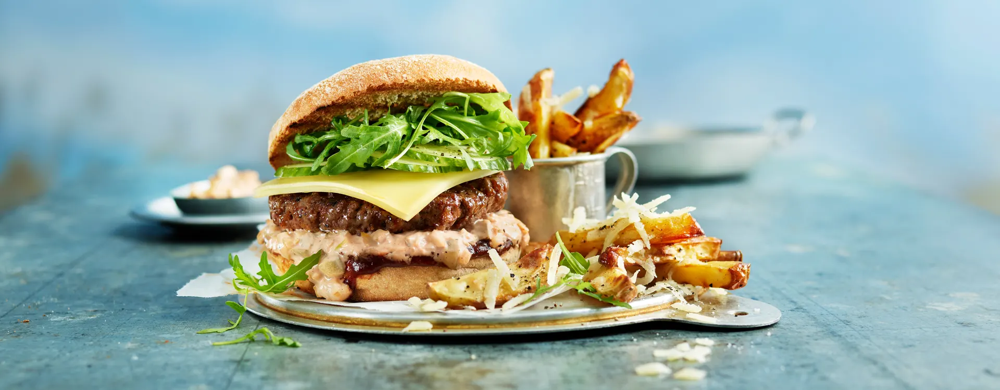

Hamburger recipe

Hjemmelaget hamburger er både raskt og enkelt å lage. Her har burgeren klassisk tilbehør som salat, tomat, løk og syltet agurk, men topp den gjerne med det du liker aller best.
Ingrediens
400g kjøttdeig
0.5ts salt
0.25ts pepper
0.5dl vann
2 ss margarin/olje til steking
Gjennomførelse
- Ha kjøttdeig, salt, pepper og vann i en bolle og rør deigen sammen. Ikke rør for lenge, deigen skal ikke bli seig.
- Ha litt vann på en fjøl og form deigen til runde kaker som klemmes ut til store flate burgere.
- Stek burgere i en stekepanne med margarin eller olje. Bruk sterk varme og stek på den ene siden til det pipler ut kjøttsaft. Snu burgerne og stek videre på den andre siden til burgeren er gjennomstekt.
- Gjør klar tilbehøret. Varm hamburgerbrød som anvist på pakken. Vask salat. Kutt tomat, rødløk og syltet agurk i skiver.
- Fyll brødene med salatblad, burgere, tomat, rødløk og syltet agurk. Ha gjerne på en dressing du liker godt, eller en hjemmelaget ketchup. Server gjerne med potetchips.